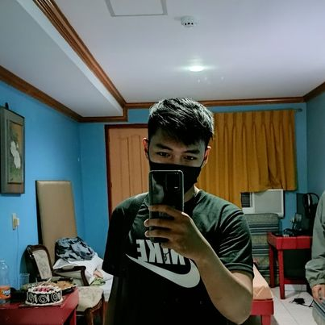
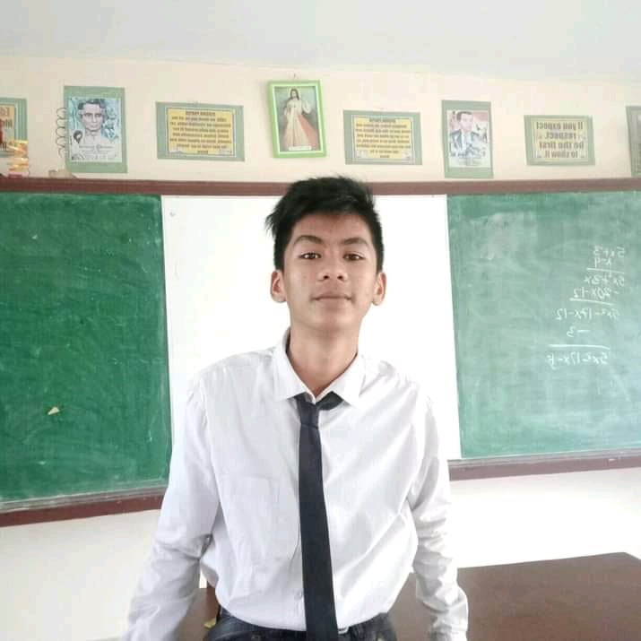

Who Am i ?
Hi my name is Jonel Tapia. I am new in this field and I've been trying to explore some things here, and
I
found it quite interesting so that's why I go learn some stuff that I'm interested in. Web development
is
fun though but I enjoy Java development much more than it. I am very passionate about what I'm doing and
i
dont settle less in learning, My goal is to become the better version of myself and one day be a
Software
Developer.
Why did I take this path?
I like to create small projects even though it seems useless to others but as an aspiring developer
constructing and learning new things every day is so satisfying. And I'm that person who likes to take
on challenges so that's why I decided to take this path. And to be honest, learning to code every day is
very addictive it feels that you just want to sit in the front of a computer for a long long time, I
know it's hard but once you get hang of it, learning software development is fun.

Marj Marasig. || A Good Friend
- Jonel Tapia is one of the most skilled person I've met in my life..
Justin Ed Pierre Tecson. || Linux Man
- He is very understanding, receptive, and has skills in communicating with others.

John Paul Canderaria Pellogo. || My Friend
- He helps me a lot with Programming stuff even He is still a student.
Artz Ayate Rase. || C# .Net Guy
- I can see that he has the potential that he will be a good Software developer in the Future.
Ricalyn Perriras WP. || The Good Mayor
- Has a positive mindset and brings positive things. He is good.